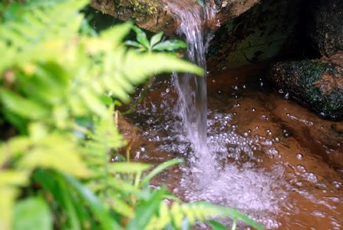

Preservação de Nascentes e a Força do Agro Familiar
A preservação das nascentes é um dos pilares mais importantes para a garantia da vida, da segurança alimentar e da sustentabilidade do planeta. As nascentes, também conhecidas como "olhos-d'água", são os pontos de origem dos rios e córregos que abastecem nossas cidades, irrigam nossas lavouras e mantêm o equilíbrio dos ecossistemas. Proteger essas fontes de água não é apenas uma escolha ecológica, mas uma necessidade urgente para o futuro da humanidade. Por que as nascentes estão em risco? Apesar de sua importância vital, as nascentes enfrentam graves ameaças causadas pela ação humana desordenada. Entre os principais problemas estão: Desmatamento: A retirada da vegetação nativa ao redor da nascente remove a proteção do solo, secando a fonte e facilitando o assoreamento. Poluição: O descarte inadequado de lixo, esgoto doméstico e o uso sem controle de agrotóxicos contaminam a água diretamente em sua origem. Pisoteio do gado: Quando os animais têm acesso livre à área da nascente, eles compactam o solo com os cascos, impedindo a infiltração da água da chuva e destruindo a flora local. Como preservar e recuperar as nascentes? A proteção de uma nascente envolve ações práticas e coordenadas, que podem ser adotadas por proprietários rurais, comunidades e pelo poder público: 1. Cercamento da área O primeiro passo é isolar a área ao redor da nascente (em um raio de pelo menos 50 metros, conforme a legislação brasileira). Isso impede o acesso de animais e o tráfego de máquinas, permitindo que a terra "respire" e a vegetação se recupere. 2. Recuperação da Mata Ciliar A vegetação ao redor da nascente funciona como um filtro natural e uma esponja. As raízes das árvores ajudam a segurar a água da chuva no solo, alimentando o lençol freático, e evitam que a terra desmorone para dentro da fonte. O plantio de espécies nativas da região é fundamental nesse processo. 3. Conservação do solo Práticas agrícolas sustentáveis na propriedade — como o terraceamento (curvas de nível) e a manutenção de áreas de infiltração — evitam que a enxurrada leve lama e poluentes em direção ao olho-d'água. Água limpa hoje, sobrevivência amanhã Cuidar de uma nascente na cabeceira de uma propriedade rural beneficia toda uma cadeia de pessoas e ecossistemas que dependem daquele rio quilômetros abaixo. Conclusão Preservar as nascentes é cuidar da saúde coletiva. Cada gota d'água protegida na sua origem significa garantir o abastecimento público, a produção de alimentos e a sobrevivência da fauna e da flora. A conscientização e a ação imediata são as ferramentas que temos para garantir que as fontes de vida do nosso planeta não sequem.
Participe do SeminárioNossa Terra, Nosso Futuro: Relato de Preservação
Como produtores rurais na região de Pitanga, compreendemos que a água é o sangue da propriedade. A preservação das nascentes começou com o cercamento das áreas de preservação permanente (APP), impedindo o acesso direto do gado leiteiro e evitando a compactação do solo e a contaminação da água. Plantamos mudas nativas ao redor dos olhos d'água, recriando a mata ciliar que protege o curso dos rios contra o assoreamento.
O agronegócio é o verdadeiro motor da economia paranaense, sendo essencial para o desenvolvimento local e regional. Ele movimenta o comércio, gera milhares de empregos no campo e na cidade, e atrai investimentos em infraestrutura. Graças à agroindústria e à agricultura familiar, diversas cidades do interior prosperam com autonomia financeira. O agronegócio impulsiona a inovação tecnológica, melhora a renda dos produtores e garante a segurança alimentar. No cenário regional, essa potência produtiva transforma o estado em um gigante exportador, fortalecendo a balança comercial e elevando a qualidade de vida da população paranaense de forma sustentável.
Essa transformação sustentável na pecuária leiteira prova que a produtividade caminha lado a lado com a ecologia. Com o manejo rotacionado de pastagens e o uso de fossas sépticas biodigestoras, garantimos a pureza dos lençóis freáticos. Proteger as fontes de água garante a sustentabilidade do nosso ecossistema e assegura a viabilidade econômica do agro para as próximas gerações paranaenses.

![[PROMPT_ESTUDANTE_ALT2: Vacas leiteiras pastando em sistema de piquetes rotacionados com bebedouro artificial distante da área de preservação ambiental.]](https://www12.senado.leg.br/radio/1/noticia/2023/07/05/comissao-do-meio-ambiente-aprova-projeto-disciplinando-a-recuperacao-e-protecao-das-nascentes-de-agua/@@images/fb8dcb42-74be-403e-a333-8715349577f9.jpeg)
Práticas Sustentáveis na Agropecuária Leiteira
Clique nos blocos abaixo para expandir e conhecer os pilares da nossa produção.
O isolamento completo do entorno de nascentes com cercas impede o pisoteio do gado, o que evita a erosão e mantém o solo permeável para reabastecer o lençol freático de forma contínua.
Utilização de esterqueiras e biodigestores para tratar os resíduos da atividade leiteira, transformando passivos ambientais em biofertilizantes ricos para as pastagens, sem contaminar os rios.
Divisão da área de pasto em piquetes, permitindo que o solo e o capim se recuperem. Isso diminui a compactação da terra e otimiza a nutrição do rebanho sem demandar abertura de novas áreas.
Espaço de Discussão Comunitária
Nenhum comentário enviado ainda. Seja o primeiro a participar!